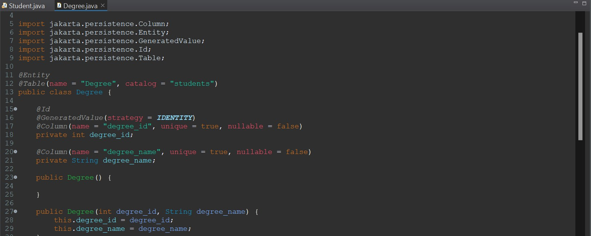
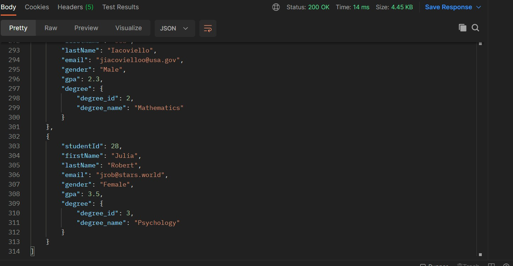

The Setup
We need to start with the required tools to getting the application setup.
IDE Enviroment
Firstly we are going to need an IDE, you can use any IDE such as Netbeans or Eclipse.
For this demo I will be using eclipse. Click this link for help with installing Eclipse. Don't create any projects, just get to the step before you create a project. Ensure you install the Java EE Edition (This is a Java IDE more catered for web development).
 Java EE Edition
Java EE Edition
Database Enviroment
Secondly we will need a way to persit the data. For this demo we will use MySQL as the database.
Click this for help with installing MySQL. Use the Developer Default Settings.
Once you have completed the installation, download this script file and run it inside the MySQL Workbench application with your root login.
It will create a user for the MySQL data, with the username StudentAdmin (password = password of course, because its the most secure password known to man).
Then the script will create a few tables, which I will go into more depth with later. After the tables have been created it will enter some dummy data to get us started.
MySQL is very similar to Oracle, so I won't go into the details on the differences but click here for more details on MySQL (including the differences from Oracle).
 Demo MySQL Script
Demo MySQL Script
Downloading the Spring Boot Starter Project
Lastly we will configure the project and download the project initializr files
Go to this website to configurate the starter project.
Default Configurate Page Spring BootConfiguration:
- Project - Maven
- Language - Java
- Spring Boot - 3.0.4 (Any Current Version that isn't SNAPSHOT will do).
- Packaging - Jar (Allows us to package the application up into a runnable Jar file).
- Java Version - 17.
-
Dependencies -
- Spring Web (Embedded webserver and REST Controller) - Required
- Spring Boot DevTools (Mainly for LiveReload and fast restarts when making changes) - Not Required
- MySQL Driver (Established the connection to the database) - Required
- Spring Data JPA (Interaction with the database) - Required
 Demo Configurate Page Spring Boot
Demo Configurate Page Spring Boot
Click generate to download initalizr project. Click here to download initalizr project if you don't want to generate your own.
Import the Maven Project
The final step for the setup is to just import the project.
Go to File > Import > Maven > Existing Maven Project.
First Steps to ImportingSelect the location of the Maven Folder > Select the POM.xml file > Finish Button.
Second Steps to ImportingWait till the project has finished importing and you have successfully imported the project.
Successfully Imported ProjectConfigurations
We just need to configurate the application to link to our database. Click this for the config file which needs to be saved under src/main/resources (there is a file already there ethier copy and paste or delete and replace).
Config File loc - insideThe JDBC properties are the only important part here. They are just to connect hibernate (database java) to mysql.
- url = Url to connect to database.
- username = Username to connect to DB.
- password = Password to connect to DB.
- dialect = MySQL5Dialect to tell hibernate that the DB is MySQL and that this is the langauage to interact with the application.
- port = Normally set to 8080 but you can set it to any port number you have avaiable
Creating the application
This section is about programming the application. I will keep things short and explain the important details as we go along.
Entity/POJO
First we will create the entities for the application. Student and Degree willl be our entities.
We will create a package called entity (crud.rest.demo.entity). This package must be under this domain in order for the Spring Boot application to scan the annotations automatically.
Then we will create two entities under that package, Student and Degree. Lets start with coding the Student Entity.
Student Class FieldsWe create the class like we would normally create an object inside java but we add the two annotations.
The first annotation @Entity informs Spring that this class is a entity.
The second anotation @Table informs hibernate that this entity is attached to the student table under the students schema.
Student Class FieldsNext we start by creating the fields linked to that table. The id field will have three annotations.
- @ID = Informs hibernate that this is an ID field
- @GeneratedValue = Informs hibernate that the value will be auto generated
- @Column = Links this field to the column on that table
We will then continue to only add the @Column to the rest of the field until we get to the Degree field.
Student Class FieldsFor the Degree field we need to added two new notations
- @OneToOne = Inform hibernate that there is a One To One relationship with this object/table
- @JoinColumn = Links the Student table to the Degree table with the column stated
Next we create three constructors, one empty, one with all fields and one without the ID. This is so that hibernate can create the object easily.
Student Class - Getters/SettersLastly, we create normal getters and setters for the Student class.
 Degree ClassFinally, we do this all again but for the Degree class. Nothing new here.
Github Link for the entities.
Persistence (Hibernate)
The next thing we need to do is to create our persistence classes to enable CRUD (Create, Read, Update, Delete) on the database.
First, we create a new package called DAO (Data Access Object), crud.rest.demo.DAO. Then we create an interface class for the StudentDAO class.
StudentDAO InterfaceThe interface just has the four methods we will use for the CRUD operations.
- findAll - Find all students in the database
- saveStudent - Save a new student into the database
- updateStudent - Update a student in the database with the new details
- deleteStudent - Delete a student from the database
Next, we will create the DAO class and implement these methods.
StudentDAO classWe start by creating the class, implementing the interface and create a field. The EntityManager object is what connect to the database and has pre-built methods for us to use within our methods to perform the CRUD operations.
We use the annotation @Autowired to tell Spring to create this object, using this constructor when the application initalizes.
StudentDAO classThen inside of each method we perform the operations using the entityManager object. We will use the operations below to create the methods.
- @Transactional = Creates a single transaction for this method.
- currentSession.createQuery = Create a query to perform on the database.
- currentSession.save = Saves the object to the database.
- currentSession.merge = Merges the object with the existing object in the database.
- currentSession.find = Creates an object from the table with this ID.
- currentSession.delete = Delete the record from the table inside the database from the object passed.
Now that all theses methods are created, we can move on to the final part of the application.
Rest Controller
Next we are going to create the REST Controller for this application. The controller is used to map the endpoints with the HTTP requests and control the data coming in and out.
Let start with the boiler plate for the Student Rest Controller Class.
Student Rest ClassWe create the class and initalize the class with the studentDAO object in order to perform the operations.
- @RestController - Informs Spring that this is a Rest Controller class.
- @RequestMapping - Create an endpoint at the string passed (localhost:8080/api).
Next we fill out the methods with the endpoints and HTTP requests.
Student Rest Class- @GetMapping - Creates a GET endpoint at localhost:8080/api/students, which will be used to obtain the students from the database.
- @PostMapping - Creates a POST endpoint at localhost:8080/api/students, which will be used to save a new student to the database.
- @PutMapping - Creates a PUT endpoint at localhost:8080/api/students, which will be used to update a student to the database.
- @DeleteMapping - Creates a DELETE endpoint at localhost:8080/api/students/{studentId}, which will be used to delete a student from the database with the student id (replace the {studentId with the id you want to replace}).
- @RequestBody - Obtains the JSON inside the body of the request and creates a student object (jackson automatically converts the JSON for us).
- @PathVariable - Converts the {studentId} into an int for the method to use.
Now we just finish writing the methods by using the StudentDAO class to perform the CRUD operations for us.
Student Rest ClassNow the application has been completed. Github Link for the REST application section.
Testing
Now we will test each endpoint to ensure that they are working. For this we will use the Postman application. You can download it here.
Postman just allows us to perform HTTP request, which will allow us test our REST application.
GET Request Test
We will perform a GET request at the URL localhost:8080/api/students
GET RequestAt the bottom, we can see that all the student have been converted into JSON for us, which was obtained from the database.
POST Request Test
We will perform a POST request at the URL localhost:8080/api/students
POST RequestFor this, we need to set the JSON object inside the body of the reqeust as RAW/JSON data.
 POST Request - CompleteAs you can see the data was now saved into the database.
PUT Request Test
We will perform a PUT request at the URL localhost:8080/api/students
 PUT Request - Obtain Object
PUT Request - Obtain Object
We will update the student with the studentId 1.
PUT Request - Update ObjectLets change her last name to Robert and here degree to id 8.
PUT Request - CompleteAs you can see here last name has changed to robert and she is now taking Art as her degree.
DELETE Request Test
We will perform a DELETE request at the URL localhost:8080/api/students/28
DELETE Request - Delete ObjectWe will delete the student with the studentId 28.
DELETE Request - Delete ObjectAs you can see there is no student in the database with the ID 28 anymore.
Success, all the test worked and the application is fully up and running. Wooo!
More Info
Thank you for reading my guide to setting up a simple REST application.
The github code for the project can be found here.
If you would like to learn more about Spring and Spring Boot, please check out this course of Udemy.